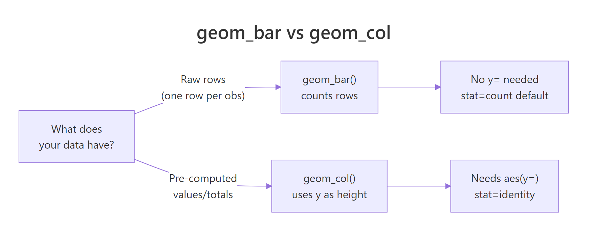
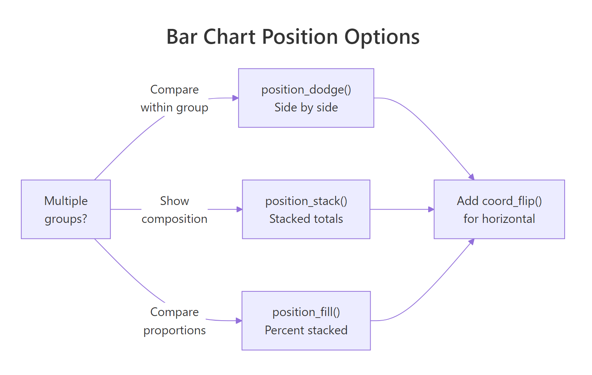

ggplot2 Bar Charts: geom_bar(), geom_col(), Stacked, Dodged and Ordered
Bar charts compare values across categories. In ggplot2, geom_bar() counts rows automatically while geom_col() uses a pre-computed height value, choosing the right one depends entirely on what your data looks like when it arrives.
Introduction
Bar charts are deceptively simple to create but full of small traps. The most common confusion is which function to use, geom_bar() or geom_col(), and why using the wrong one produces a chart that either errors or lies about your data. The second most common trap is leaving bars in alphabetical order when the reader needs them sorted by size to extract meaning instantly.
In this tutorial, you will learn how to:
- Choose between
geom_bar()andgeom_col()based on your data shape - Create stacked, dodged, and percent-stacked bar charts
- Sort bars by value using
fct_reorder() - Add data labels directly on or above bars
- Flip to horizontal bars for long category names
All code blocks share a single WebR session, variables from earlier blocks carry forward.
What is the difference between geom_bar() and geom_col()?
This is the question that trips up nearly every ggplot2 beginner. Both functions draw bar charts, but they expect different input data.

Figure 1: Decision guide: geom_bar() for raw data, geom_col() for pre-computed values.
geom_bar() takes raw, unaggregated data and counts how many rows fall into each category. You only supply x, no y needed. It runs stat_count() internally.
geom_col() takes data where you've already computed the heights (counts, averages, totals). You supply both x and y. It uses stat_identity(), it leaves the data as-is.
Let's set up data for both scenarios:
Now use geom_bar() on the raw data, it counts how many cars fall in each class:
Now use geom_col() on the pre-computed averages, the bar height is the actual hwy value:
KEY INSIGHT: You can also use
geom_bar(stat = "identity")as a substitute forgeom_col(). They are equivalent. In modern ggplot2,geom_col()is the cleaner choice, it signals your intent clearly without thestat = "identity"override. But you will see both in the wild, so recognize them as the same thing.
Try it: Try adding a y aesthetic to geom_bar() without stat = "identity". What error does ggplot2 produce?
Click to reveal solution
geom_bar() defaults to stat = "count", which derives the y values by counting rows in each x bin, supplying your own y collides with that calculation. The error tells you exactly which stat is complaining. Either drop the y (and use geom_bar() for counts) or switch to geom_col() / geom_bar(stat = "identity") to use the supplied heights.
How do you create stacked and dodged bar charts?
When your data has a second categorical variable (like drive type within each vehicle class), the position argument controls how bars within each x-category are arranged.

Figure 2: Position options for grouped bars: dodge, stack, and fill.
Stacked bars (default) place sub-categories on top of each other, showing totals and composition simultaneously:
Dodged bars place sub-categories side-by-side, making it easier to compare values within each group:
preserve = "single" keeps all bars the same width even when some groups have fewer sub-categories. Without it, bars in sparse groups stretch wider to fill space.
Percent-stacked bars normalize each stack to 100%, letting you compare proportions across groups regardless of total count:
TIP: Use stacked when the total height matters (e.g., total sales volume by region). Use dodged when you need to compare sub-group values directly (e.g., sales per quarter by product). Use percent-stacked when the mix/proportion matters more than the absolute count (e.g., market share over time).
Try it: Change position = "fill" to position = "stack" in p_fill. How does the chart interpretation change?
Click to reveal solution
position = "stack" shows the raw counts per drive type, so each bar's total height tells you how many cars of that class are in the dataset, suv is now visibly the tallest. position = "fill" normalises every bar to 100%, which masks the count differences but makes the mix across classes directly comparable. Pick stack when totals matter, fill when proportions matter.
How do you reorder bars by value?
Bars in alphabetical order are almost never the right choice. A reader's eye moves from left to right, sorting by descending value puts the most important category first and makes comparisons effortless. The fct_reorder() function from the forcats package handles this.
fct_reorder(factor, numeric) reorders the levels of class by the values in hwy. Since bar charts read left-to-right by default, the leftmost bar is the smallest and the rightmost is the largest. When you flip to horizontal (next section), this naturally becomes top-to-bottom descending.
TIP: For frequency-sorted bars from raw data (using
geom_bar()), usefct_infreq()instead:aes(x = fct_infreq(class)). It reorders the factor by count automatically, no pre-aggregation needed.
Try it: Change fct_reorder(mpg_avg$class, mpg_avg$hwy) to fct_reorder(mpg_avg$class, -mpg_avg$hwy) (note the minus sign). How does the bar order change?
Click to reveal solution
Negating the sort key (-hwy) reverses the ordering, bars now read left-to-right from highest to lowest mpg. This is the natural reading direction for vertical bar charts because the eye lands on the most important value first. For horizontal bars (after coord_flip()), the ascending version is usually better since it puts the largest bar at the top.
How do you add labels to bar charts?
Labels on bars let readers read exact values without estimating from the axis. The positioning depends on whether you want labels inside, above, or at the end of each bar.
expand = expansion(mult = c(0, 0.12)) adds 12% headroom above the tallest bar so the top labels don't get clipped. Without this, labels above the highest bar disappear.
For labels inside the bar (useful for long bars with enough room), change vjust and color:
WARNING: Inside labels fail for short bars, the text overflows the bar boundary and becomes unreadable. Check your data range before committing to inside placement. A safe rule: use inside labels only when all bars are at least 30% of the max bar height.
Try it: Change vjust = -0.4 to vjust = 2 in p_label. Does the label move inside the bar? Does it still look readable?
Click to reveal solution
vjust = 2 shifts the label down by two text-line heights, planting it inside the top of the bar, and switching to color = "white" keeps it readable against the steelblue fill. The trick only works while every bar is tall enough to contain the text; the shortest bars in this set get crowded, which is exactly the trade-off the WARNING above mentions.
How do you make a horizontal bar chart?
Horizontal bars are easier to read when category names are long. coord_flip() rotates the entire chart 90 degrees, x becomes y and vice versa. Apply it to any of the charts built so far:
Because p_ordered was already sorted ascending by fct_reorder(), after flipping, the chart reads top-to-bottom from highest to lowest, the most natural reading direction for a ranked list.
KEY INSIGHT: In newer ggplot2 (3.3+), you can also achieve horizontal bars by swapping x and y in
aes()directly,aes(y = class, x = hwy), withoutcoord_flip(). The advantage is that axis labels stay in their natural orientation without flipping. The disadvantage is thatfct_reorder()with ascending order now produces top-to-bottom descending without needing to flip, which can be confusing. Both approaches work,coord_flip()is slightly more intuitive for beginners.
Try it: Apply coord_flip() to p_fill (the percent-stacked chart). Does the horizontal layout make the proportion comparison easier?
Click to reveal solution
After coord_flip() the bars run left-to-right with class names listed down the y-axis, so long names like subcompact no longer need to be tilted to fit. The proportion segments now read as horizontal slices, which mirrors how the eye scans rows in a table, easier than comparing vertical sub-sections at a glance.
Common Mistakes and How to Fix Them
Mistake 1: Using geom_bar() with pre-computed data and a y aesthetic
❌ This produces an error because geom_bar() tries to count rows and conflicts with the supplied y variable:
✅ Use geom_col() for pre-computed values:
Mistake 2: Leaving bars in alphabetical order
❌ Alphabetical order rarely communicates a meaningful ranking. Readers can't immediately spot the highest or lowest value.
✅ Sort by value with fct_reorder(): aes(x = fct_reorder(class, hwy)) or use fct_infreq() for count data.
Mistake 3: Using color= instead of fill= for bar color
❌ geom_bar(color = "steelblue") colors only the outline of the bars, not the interior:
✅ Use fill to color the bar interior:
Mistake 4: Labels getting clipped at the top
❌ Adding geom_text(vjust = -0.4) without expanding the y-axis clips labels above the tallest bar.
✅ Add scale_y_continuous(expand = expansion(mult = c(0, 0.12))) to add headroom above the highest bar.
Mistake 5: Dodged bars with unequal widths
❌ position = "dodge" by default makes narrow bars for sparse groups, categories with fewer sub-groups get wider bars.
✅ Use position = position_dodge(preserve = "single") to maintain consistent bar widths across all groups.
Practice Exercises
Exercise 1: Diamond cut bar chart
Using the diamonds dataset, create two bar charts side-by-side (use gridExtra::grid.arrange() or patchwork):
- A bar chart of
cutfrequency usinggeom_bar(), bars sorted from highest to lowest count - A bar chart of average
pricepercutusinggeom_col(), bars sorted by price
Are the highest-frequency cuts also the most expensive?
Exercise 2: Stacked vs percent-stacked comparison
Using the mpg dataset, create a stacked and a percent-stacked bar chart of class vs drv (drive type). Then answer: which vehicle classes are most dominated by front-wheel drive? Does the absolute count chart or the proportion chart make this clearer?
Complete Example
This final chart combines everything: pre-computed averages, sorted bars, data labels, a clean theme, and colorblind-friendly colors, ready for a report or presentation.
element_blank() removes the horizontal grid lines, they're redundant when exact values appear as labels. The bold manufacturer names draw attention to the categories, not the bars themselves.
Summary
| Task | Code |
|---|---|
| Count rows per category | geom_bar() |
| Use pre-computed heights | geom_col() |
| Stack sub-categories | geom_bar(position = "stack") |
| Side-by-side sub-categories | geom_bar(position = position_dodge(preserve = "single")) |
| Proportion (percent) stacked | geom_bar(position = "fill") |
| Sort by value | aes(x = fct_reorder(var, value)) |
| Sort by frequency | aes(x = fct_infreq(var)) |
| Labels above bars | geom_text(aes(label = val), vjust = -0.4) |
| Labels inside bars | geom_text(aes(label = val), vjust = 1.6, color = "white") |
| Horizontal bars | + coord_flip() |
| Fill vs outline color | fill = "color" (interior) vs color = "color" (border) |
Key rules:
- Use
geom_bar()for raw data (counts automatically),geom_col()for pre-aggregated data - Sort by value with
fct_reorder(), alphabetical order is almost never informative - Add headroom for above-bar labels:
scale_y_continuous(expand = expansion(mult = c(0, 0.12))) - Use
fill(notcolor) to change bar fill color
FAQ
Can I use geom_bar() with stat = "identity" instead of geom_col()?
Yes, they are equivalent. geom_bar(stat = "identity") and geom_col() produce identical output. geom_col() was added to ggplot2 to make the intent clearer, use it when you have pre-computed values.
How do I change bar width?
Use the width argument: geom_col(width = 0.5). The default is 0.9 (90% of the space between x positions). Lower values create narrower bars with more white space between them.
How do I sort a stacked bar chart by one sub-group's size?
This requires reordering the factor before plotting. Compute the values for the sub-group you want to sort by, then use fct_reorder() on that subset's values. Alternatively, use fct_reorder2() for sorting by a two-variable function.
How do I add a reference line to a bar chart?
Use geom_hline(yintercept = value) for horizontal reference lines (or geom_vline() after coord_flip()). For example: + geom_hline(yintercept = mean(mpg_avg$hwy), linetype = "dashed", color = "grey50").
Why do my bars have gaps at the x-axis baseline?
By default, ggplot2 adds padding below the x-axis. To remove it: scale_y_continuous(expand = expansion(mult = c(0, 0.05))), the first value (0) removes padding at the bottom, the second (0.05) adds 5% headroom at the top.
References
- Wickham, H. (2016). ggplot2: Elegant Graphics for Data Analysis. Springer. https://ggplot2-book.org/
- ggplot2 reference,
geom_bar()andgeom_col(). https://ggplot2.tidyverse.org/reference/geom_bar.html - forcats reference,
fct_reorder(). https://forcats.tidyverse.org/reference/fct_reorder.html - Wilke, C. O. (2019). Fundamentals of Data Visualization, Chapter 6: Visualizing Amounts. https://clauswilke.com/dataviz/
- R Graph Gallery, Bar Charts. https://r-graph-gallery.com/barplot.html
- Healy, K. (2018). Data Visualization: A Practical Introduction, Chapter 4. https://socviz.co/
Continue Learning
- ggplot2 Scatter Plots, explore relationships between two continuous variables with
geom_point(), color mapping, and trend lines. - ggplot2 Distribution Charts, compare distributions with histograms, boxplots, and violin plots, a natural complement to bar charts when you need more than a single summary value per group.
- ggplot2 Line Charts, track change over time with
geom_line(), grouped by category and styled with linetypes.